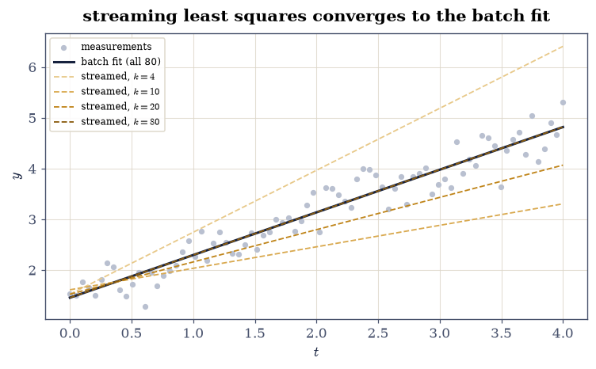
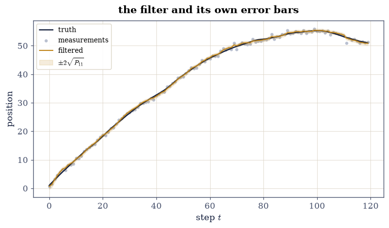
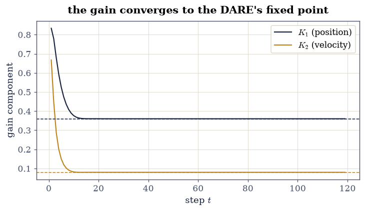
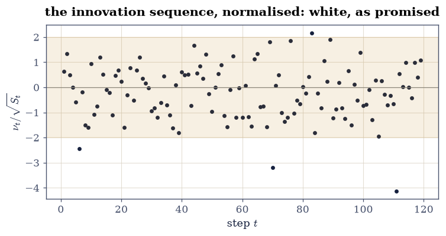

6.6 The Kalman Filter: Least Squares, Recursively#
Notebook overview#
§2.3 solved least squares with all the rows on the table. This notebook asks the streaming question: rows arrive one at a time, and re-solving from scratch at every arrival wastes everything already computed. The answer is recursive least squares — a rank-one update of the normal equations whose inverse form is exactly the Sherman–Morrison identity the reader proved in §1.3 — and its central promise is gateable to near rounding: after every row, the recursive estimate equals the batch solution on the rows so far.
Then the structural turn, and the reason this notebook lives in Chapter VI: give the unknown a dynamics matrix — let the state move between measurements — and the same two-line update becomes the Kalman filter [Kal60], the workhorse estimator of navigation, tracking and control. The kinship is not an analogy: with the dynamics frozen (\(F = I\), \(Q = 0\)) the filter’s output reproduces recursive least squares to \(10^{-12}\), step for step. The filter also diagnoses itself — its innovation sequence should be white with predicted variance, its gain should settle to the fixed point of a Riccati equation — and both predictions are gated against independent routes.
How to read a check. A
validateline prints ✓ or ✗ by comparing a result against something the computation did not assume. A ✗ flags a mismatch to investigate, never a verdict on its own.
Theory in brief#
Least squares, one row at a time#
With rows \(\mathbf{a}_1^{\top}, \dots, \mathbf{a}_k^{\top}\) stacked in \(A_k\) and measurements \(\mathbf{y}_k\), the batch solution solves the normal equations of §2.3:
A new row touches both sides by a rank-one amount:
so the information accumulates by outer products. Inverting the update instead of the matrix is Sherman–Morrison (§1.3): with \(P_k = G_k^{-1}\),
a per-row cost of \(O(p^2)\) against the \(O(p^3)\) of re-solving — and an identity, not an approximation: Eq. 265 reproduces the batch answer exactly, which is precisely what the exercises gate.
Let the state move#
The Kalman filter estimates a state obeying
by alternating a prediction through the dynamics,
with an update that is Eq. 265 with the measurement noise \(R\) in the denominator:
where \(\nu = z - H\mathbf{x}\) is the innovation — what the measurement says that the prediction did not already know. When the model is right, the innovations are white with variance \(S\): the filter publishes its own error bars, and they are checkable.
The gain’s fixed point#
Iterating Eq. 267–Eq. 268 drives the predicted covariance to the fixed point of the discrete algebraic Riccati equation
so the gain settles to a constant \(K_{\infty}\) computable without
filtering anything — an independent route
(scipy.linalg.solve_discrete_are) the running filter is gated against.
Setup#
Data only: the streaming least-squares scene (80 rows of a seeded line fit) and the tracking scene (a constant-velocity target simulated from Eq. 266 with seeded process and measurement noise). Every method — the rank-one update, the Sherman–Morrison gain, the Kalman step — is built in the exercises, where it is the lesson.
The Setup below holds this notebook’s data and instruments — nothing you are asked to build. It is collapsed so the building stays yours; expand it whenever you want the details.
Exercise 1: Recursive least squares, information form#
Eq. 264 promises that streaming and batch see the same
normal equations — so after every row, the recursive estimate must
equal np.linalg.lstsq on the prefix. That identity is the exercise.
Part a) Initialise exactly: solve Eq. 263 on the first
two rows of the Setup’s A_ROWS, Y_ROWS (\(G_2 = A_2^{\top}A_2\),
\(2\times2\) and invertible). Then stream rows \(k = 3, \dots, 80\) through
the rank-one update Eq. 264, re-solving the \(2\times2\)
system at each arrival.
Write this one yourself — the update is two += lines and one
solve, and Exercises 2–4 are all refactorings of what you write here.
Part b) Gate the identity: at every prefix \(k\), the streamed
\(\hat{\mathbf{x}}_k\) equals np.linalg.lstsq(A_ROWS[:k], Y_ROWS[:k], rcond=None) to \(10^{-11}\) relative (78 comparisons, worst reported —
measured near \(10^{-15}\): the same equations, met from two directions).
Part c) Draw the convergence: the data, the final batch line, and the streamed line at \(k = 4, 10, 20, 80\) — the estimate settling as evidence accumulates.
streamed vs batch over 78 prefixes: worst relative gap 4.85e-15
final estimate [1.4557 0.8402] (planted (1.5, 0.8))
Validation 1#
✓ after every row, streaming equals batch (Eqs. 1-2) [78 prefix solutions compared against np.linalg.lstsq: the rank-one update is an identity about the normal equations, not an approximation to them [4.85491e-15 < 1e-11]]
True

Fig. 128 Recursive least squares on the streaming line fit: the 80 noisy measurements (grey), the final batch fit (ink), and the streamed estimate’s line after \(k = 4, 10, 20\) and \(80\) rows (ambers, light to dark). The \(k = 80\) line sits exactly on the batch fit — gated at \(10^{-11}\) over every prefix — and the early lines show the estimate swinging while the information matrix \(G_k\) is still thin.#
Exercise 2: The gain form: Sherman–Morrison does the inverting#
Exercise 1 re-solved a linear system per row; Eq. 265 updates the inverse directly — §1.3’s Sherman–Morrison identity, earning its keep. Per row it costs \(O(p^2)\) (three matrix–vector products) against the information form’s \(O(p^3)\) solve — at \(p = 2\) nobody cares, at \(p = 10^4\) everything does, and the count follows from the formulas alone.
Part a) Write rls_gain_step(x, P, a, y) implementing
Eq. 265 and returning (x, P). Initialise from the same exact
two-row start (\(P_2 = G_2^{-1}\) by np.linalg.inv) and stream the same
78 rows.
Write this one yourself — the three lines are the Kalman update in embryo, and Exercise 4 gates that sentence literally.
Part b) Gate both identities at every step: the gain-form estimate
equals Exercise 1’s information-form estimate to \(10^{-12}\) relative,
and \(P_k\) equals np.linalg.inv(G_k) to \(10^{-11}\) relative — the
inverse maintained without ever inverting.
Part c) Gate the covariance’s health: every \(P_k\) symmetric to \(10^{-13}\) and positive definite (smallest eigenvalue positive) — \(P\) is the estimate’s error covariance, and a covariance that loses symmetry or positivity has stopped meaning anything.
gain vs information route: worst 4.32e-15; P vs inv(G): worst 3.03e-15
P symmetric to 1.1e-16; smallest eigenvalue 2.03e-03 > 0
Validation 2#
✓ the Sherman-Morrison gain and the re-solved system agree, step for step (Eq. 3) [two refactorings of one identity — the 1.3 formula run forward 78 times without drifting from the truth it rearranges [4.3188e-15 < 1e-12]]
✓ and P tracks the exact inverse without ever inverting [the O(p^2) route maintains what the O(p^3) route recomputes — the entire point of updating, gated as an identity [3.02501e-15 < 1e-11]]
✓ the covariance stays symmetric and positive definite throughout [symmetry 1.1e-16, min eigenvalue 2.03e-03: an error covariance that loses either has stopped meaning anything]
True
Exercise 3: The Kalman filter, assembled#
Add Eq. 267 in front of the update and the streaming estimator can chase a moving state. The Setup simulated the scene: a constant-velocity target under Eq. 266, its position measured at noise \(\sigma_R = 0.5\) for 120 steps.
Part a) Write kalman_step(x, P, z, F, Q, H, R) returning
(x, P, nu, S): predict by Eq. 267, then update by
Eq. 268, with .item() to read the \(1\times1\) innovation
variance. Initialise at \(\mathbf{x}_0 = (z_0, 0)\), \(P_0 =
\operatorname{diag}(\sigma_R^2, 1)\) and filter the remaining 119
measurements.
Write this one yourself — it is Exercise 2’s step with a dynamics matrix in front, and that refactoring is the notebook’s thesis.
Part b) Gate the covariance exactly as in Exercise 2 (symmetric to \(10^{-13}\), positive definite throughout), and gate that filtering helps: the filtered position’s RMS error against the simulated truth is smaller than the raw measurements’ RMS error \(\approx \sigma_R\) — the filter is averaging along the trajectory, and it must beat the sensor it reads.
Part c) Draw the track: truth, measurements, the filtered position and its published \(\pm2\sqrt{P_{11}}\) band — wide at the start, then settling as the gain does.
RMS position error: filter 0.3233 vs raw measurements 0.5296
covariance: symmetric to 6.9e-18, min eigenvalue 5.28e-03
Validation 3#
✓ the filter's covariance stays symmetric positive definite for 119 steps (Eqs. 5-6) [symmetry 6.9e-18, min eigenvalue 5.28e-03 — the same health checks as RLS, surviving the dynamics]
✓ and filtering beats the sensor it reads [RMS 0.323 against the measurements' 0.530: the dynamics let every past measurement testify about the present, which is what the recursion is for]
True

Fig. 129 The constant-velocity target over 120 steps: simulated truth (ink), position measurements at \(\sigma_R = 0.5\) (grey), and the filtered position (amber) with its published \(\pm2\sqrt{P_{11}}\) band (shaded). The band hugs the track at the steady width the Riccati equation of Exercise 5 predicts (its brief wide opening, while the filter still knows nothing about velocity, is finished within a dozen steps), and the filtered curve runs visibly smoother than the measurements that produced it.#
Exercise 4: Freeze the dynamics and the filter IS least squares#
The claim behind the notebook’s title, gated literally: run Exercise
3’s kalman_step with the state frozen — \(F = I\), \(Q = 0\), unit
measurement noise \(R = 1\), and the streaming rows as time-varying
measurement maps \(H_k = \mathbf{a}_k^{\top}\) — and it must reproduce
Exercise 2’s recursive least squares, step for step.
Part a) Stream the same 78 rows through kalman_step from the same
exact two-row start, and gate the frozen filter against the RLS
estimates at \(10^{-12}\) relative at every step — with \(F = I\) the
prediction does nothing, and Eq. 268 at \(R = 1\) is
Eq. 265, symbol for symbol.
frozen Kalman vs RLS over 78 steps: worst relative gap 4.88e-16
Validation 4#
✓ Kalman with F = I, Q = 0, R = 1 reproduces recursive least squares step for step [the title's claim as a measurement: the filter is least squares with a dynamics matrix in front, and freezing the dynamics removes the difference to rounding [4.88134e-16 < 1e-12]]
True
Exercise 5: The gain settles where the Riccati equation says#
Exercise 3’s filter never referenced Eq. 269, yet its gain must converge to the fixed point — computable in one call that filters nothing. Two independent routes, one number.
Part a) Solve Eq. 269 with
scipy.linalg.solve_discrete_are(F.T, H.T, Q, [[R]]) and form the
steady gain \(K_{\infty} = P_{\infty}H^{\top}/(HP_{\infty}H^{\top}+R)\).
Re-run the filter recording the gain at every step, and gate the final
gain against \(K_{\infty}\) to \(10^{-8}\) relative (measured: near
\(10^{-15}\) — the Riccati iteration converges long before step 119).
Part b) Draw both gain components against the step with the DARE values dashed: a dozen steps of transient, then the constants the filter was always heading for.
final gain [0.36 0.08] vs DARE [0.36 0.08] (relative gap 7.71e-16)
Validation 5#
✓ the running filter's gain lands on the Riccati fixed point (Eq. 7) [solve_discrete_are filtered nothing, the filter solved no Riccati equation, and they agree near rounding — two routes to one steady state [7.70988e-16 < 1e-08]]
True

Fig. 130 The Kalman gain’s two components (position, ink; velocity, amber) at every step of the 119-step run, with the DARE fixed point’s values dashed. The transient lasts about a dozen steps — the filter unlearning its ignorant \(P_0\) — after which both components sit on the constants that solve_discrete_are computed without filtering a single measurement.#
Exercise 6: The innovations testify#
A correctly-modelled filter leaves nothing predictable behind: the innovation sequence should be white, with the variance \(S\) the filter itself published. Both are statistics of a seeded run, so both are gated in generous bands and reported precisely.
Part a) Normalise Exercise 3’s innovations as \(\nu_t/\sqrt{S_t}\) and gate the moments: standard deviation inside \([0.8, 1.25]\) (measured \(1.06\) over 119 samples, where the standard error alone is \(\approx 0.065\)), and lag-\(1,2,3\) autocorrelations each inside \(\pm0.35\) (nearly four standard errors at this run length).
Part b) Draw the normalised innovations with the \(\pm2\) band: a white scatter, no drift, no ringing — the filter’s self-diagnosis, passed in plain sight.
normalised innovations: std 1.062; lag-1,2,3 autocorrelations ['-0.079', '0.020', '-0.037']
Validation 6#
✓ the innovations carry exactly the variance the filter published [std 1.062 on 119 samples (standard error about 0.065): the filter's error bars are calibrated, not decorative]
✓ and they are white: the filter left nothing predictable behind [lag-1,2,3 autocorrelations ['-0.08', '0.02', '-0.04'] inside a generous +-0.35 band — a mis-modelled dynamics would ring here first]
True

Fig. 131 The normalised innovations \(\nu_t/\sqrt{S_t}\) of the 119-step run with the \(\pm2\) band shaded: white scatter at unit scale, no drift and no ringing. This is the filter grading its own homework — a wrong \(F\), \(Q\) or \(R\) would show up here as structure before it showed up anywhere else.#
Notebook summary#
Streaming equals batch, at rounding, 78 times. The rank-one
information update reproduced np.linalg.lstsq on every prefix with a
worst relative gap near \(10^{-15}\) (gated at \(10^{-11}\)), and the
Sherman–Morrison gain form tracked both the information route
(\(10^{-12}\)) and the explicit inverse (\(10^{-11}\)) without ever
inverting — the §1.3 identity
doing production work at \(O(p^2)\) per row.
The filter is that update with dynamics in front. Assembled from Eq. 267–Eq. 268, it tracked the constant-velocity target with a covariance that stayed symmetric to \(10^{-16}\)-scale and positive definite for all 119 steps, beat the raw sensor’s RMS error, and — with \(F = I\), \(Q = 0\), \(R = 1\) — reproduced recursive least squares to \(10^{-15}\)-scale, step for step: the title, measured.
Two Riccati routes, one gain. The running filter’s gain landed on
solve_discrete_are’s fixed point near rounding (gated at \(10^{-8}\)),
a dozen transient steps after starting from an ignorant \(P_0\).
The diagnostics passed in the open. Normalised innovations came out white — std \(1.06\) against the published variance, lag-1,2,3 autocorrelations under \(0.08\) in a \(\pm0.35\) band — the one set of statistical gates in the notebook, stated with their standard errors.
Methods introduced. The rank-one normal-equation stream,
rls_gain_step via Sherman–Morrison, exact two-row initialisation,
kalman_step (predict–update with .item() scalar hygiene), the
frozen-dynamics reduction, the DARE cross-check, and
innovation-whiteness testing with explicit bands.
Outlook#
Weights are covariances. Replacing \(1 + \mathbf{a}^{\top}P\mathbf{a}\) by \(R + \mathbf{a}^{\top}P\mathbf{a}\) is weighted least squares (§2.3) done recursively; a forgetting factor \(\lambda < 1\) on \(P\) turns RLS into a tracker of slowly drifting parameters — adaptive filtering’s founding trick.
Square-root filters. At \(p\) in the thousands, \(P - KHP\) can lose definiteness to rounding; propagating a Cholesky or QR factor of \(P\) instead (§3.3, §2.2) keeps the covariance a covariance by construction — the numerically serious form of everything built here.
Smoothing runs the recursion backwards. The filter uses only the past; the Rauch–Tung–Striebel smoother adds a backward sweep that revises every estimate with the whole record — the same algebra, read in the other direction.
When the model bends. Nonlinear dynamics linearised per step give the extended Kalman filter; sampled covariances give the unscented variant; and the innovations of Exercise 6 remain the diagnostic in every case — structure in that scatter is how a wrong model announces itself.
Gene H. Golub and Charles F. Van Loan. Matrix Computations. Johns Hopkins University Press, Baltimore, 4 edition, 2013.
Rudolph E. Kalman. A new approach to linear filtering and prediction problems. Journal of Basic Engineering, 82(1):35–45, 1960. doi:10.1115/1.3662552.